Kappale 9 Vasen kammio
Ultratessa tulee usein unohdettua, että sydän on kompleksi kolmiulotteinen rakenne. 2D-echoa tuijottaessa nähdään vain liike tietyllä leiketasolla eikä pystytä arvostamaan sydämen oikeaa liikettä, joka on esim. vasemman kammion kannalta niin pitkittäissuuntaista kuin kiertävää. Onkin siis tärkeää muistaa, että yksittäinen mittaus yksittäiseltä leiketasolta ei kerro koko tarinaa, varsinkaan vasemman kammion toimintaa arvioitaessa. Tämän takia kannattaa harjoitella arvioimaan sydäntä monesta eri näkökulmasta ja keräämään tuloksia moniparametrisesti - täten saa tarkemman ja luotettavamman arvion mistä tahansa rakenteesta, jota tutkii.

9.1 Vasemman kammion mitat
Vasemman kammion mitat kerätään useimmiten PLAX-projektiosta ja tyypillisesti lisäksi myös vähintään apikaalisesti.
Tyypillisimmät mitattavat arvot ovat seinämien paksuudet sekä ejektiofraktion laskemiseksi diastolinen ja systolinen läpimitta (ja apikaalisesti tilavuuden arvio piirtämällä).
9.1.1 PLAX
Parasternaalinen pitkittäisakseli on tyypillisellä potilaalla yleensä ensimmäiseksi haettu projektio ja se on myös yleisimmin käytetty projektio vasenta kammiota mitattaessa. Tavoitteena on saada sydän kuvaan niin, että kammio ei ole lyhennetty (foreshortened). Kammion ei tulisi näyttää apeksistaan pyöreältä (johtuu siitä, että ultraäänellä ei leikata oikeaa kärkeä). Yleensä foreshorteningin siis tunnistaa siitä, että apeksi “työntyy” kammioon ja kammio näyttää pieneltä pussilta. Apeksia ei edes tulisi näkyä oikein suunnatussa PLAX-projektiossa. Yleensä paras troubleshooting-vinkki on rotatoida anturia hieman myötäpäivään - tämä auttaa kammion “avaamisessa”. Joskus tarvitsee siirtää anturia hieman mediaalisesti tai yksi kylkiluuväli ylöspäin tai joskus tarvitsee tehdä tilttausliikkeitä.


9.1.1.1 Mittaustekniikat ja yleinen ongelma
Kammion ulottuvuudet voidaan mitata niin suoraan B-kuvasta kuin M-moodikäyrästä. M-moodilla voidaan saada hyvinkin tarkat ja nopeat mittaukset, mutta sen ongelmana on yleensä mm. sydämen “väärä” asento ja/tai heikkotasoinen kuva. Myös pienten kammioiden “pseudoshortening” papillaarilihasten tullessa mittausviivalle on suhteellisen yleinen ongelma.
Tärkeä periaate: sydänrakenteiden ulottuvuuksien mittaus tulisi tapahtua kohtisuorasti niiden pitkittäisakseliin nähden.
M-moodissa leikkauslinja tulisi asettaa siten, että se katkaisee kohtisuorasti vasemman kammion heti mitraaliläpän avautuvien purjeiden kärkien distaalipuolelta. Jos sydämen asento on liian pysty (todella usein on), niin M-moodi katkaisee kammion liian vinosti. Tämä mm. yliarvioi vasemman kammion poikkimittaa. Jos ei saa kunnollista kohtisuoraa leikettä, niin voi periaatteessa vääntää itse leikkauslinjan kulmaa, mutta se usein tekee kuvasta liian “pehmeän” ja vaikeatulkintaisen. Suosittelenkin, että jos ei saa kunnollista kohtisuoraa leikettä tai tarpeeksi hyvälaatuista kuvaa, niin kannattaa mittaukset tehdä suoraan B-kuvasta (usein muutenkin kannattaa tehdä ns. laatukontrollina, vaikka saisikin M-moodilla mitattua). Nykysuosituksissa (ASE) B-kuvasta piirtämistä pidetään yleisestikin parempana kuin M-moodia. B-kuvamittauksissa voi suunnata mittauslinjat rakennespesifisesti ja täten saada luotettavampia arvoja - ei siis tarvitse mitata suoraan samasta linjasta kaikkia vasemman kammion mittoja, vaan esimerkiksi seinämät ja läpimitan voi piirtää erisuuntaisilla viivoilla riippuen niiden pitkittäisakselista; seinämät ja kammiolokero eivät siis aina kulje samassa linjassa.
Alla olevassa kuvassa vain keltainen linja kulkee kohtisuorasti vasemman kammion pitkittäisakseliin nähden. Vaalea ja punainen linja leikkaavat kammion liian pystysuorasti eikä niitä voi siten pitää luotettavina mittauksina. M-moodilinja lähtee normaalisti siis UÄ-kartion huipulta eli normaalisti saisi vain punaisen tai vaalean linjan kautta tehtyä mittauksia. Jos kuitenkin aivan pakottavasti haluaa tehdä M-moodista mittaukset, niin mittauslinjan voi vääntää keltaisen suuntaiseksi, mutta yllä mainitun mukaisesti se tekee M-moodin kuvanlaadusta yleensä liian vaikeasti luettavaa tulkintaa varten.
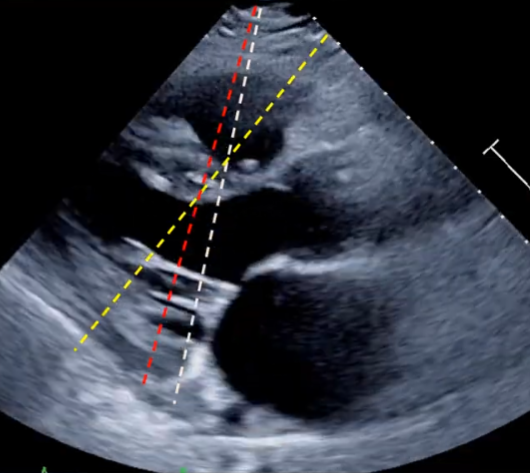
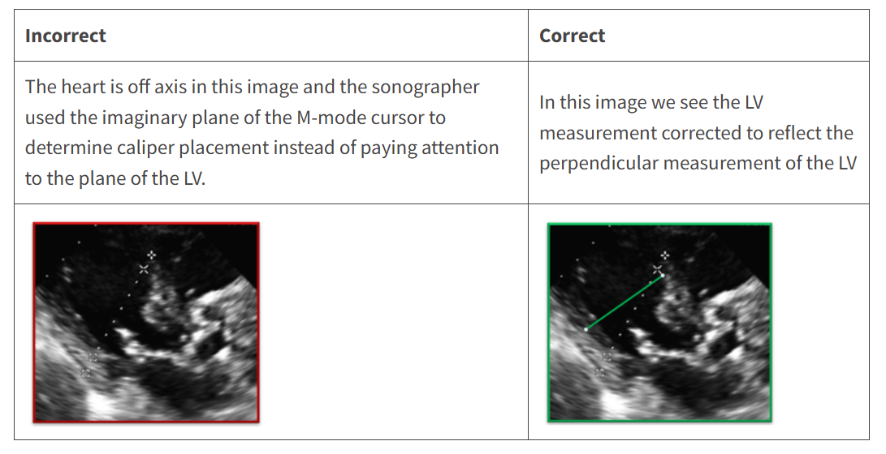
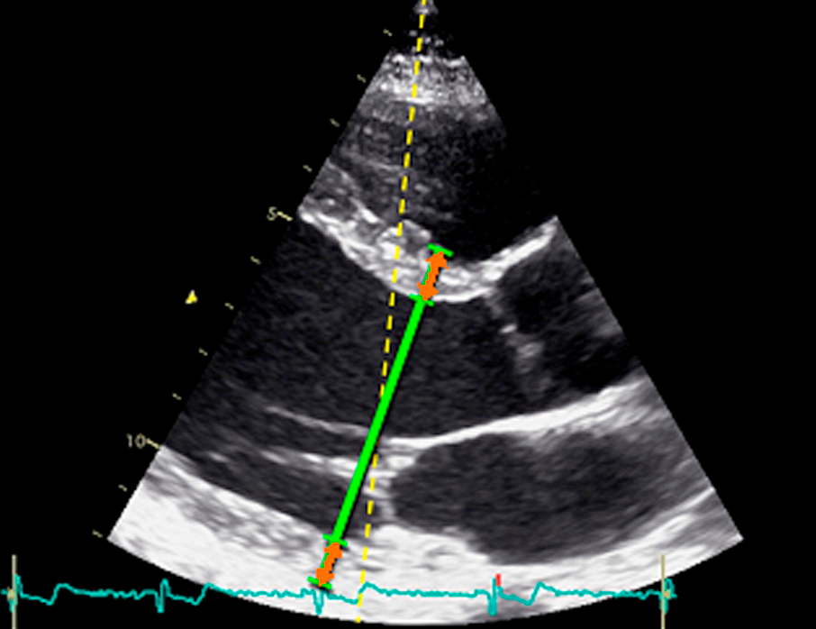
9.1.1.2 Mitattavat suureet ja aloittaminen
Aluksi siis haetaan mahdollisimman hyvä projektio, jonka jälkeen kuva pysäytetään painamalla UKG-laitteen nappulaa “Freeze”. Sitten pallohiireä liikuttamalla saa siirrettyä pysäytystä edeltävää talletetta ajassa taaksepäin (ja eteenpäin).
PLAX-kuvasta yleensä mitataan vähintään seinämien paksuudet (diastolessa) sekä läpimitta diastolessa ja systolessa. Sydämen tarkkaa sähköisen syklin vaihetta ei tarvitse miettiä, vaan pysäytetystä kuvasta haetaan vain loppudiastole ja loppusystole visuaalisin perustein: loppudiastole on silloin, kun LV:n läpimitta on suurimmillaan ja loppusystole LV:n ollessa pienimmillään.
Kun on löytänyt loppudiastolen eli sen hetken, jossa vasen kammio on suurimmillaan, niin voi aloittaa mittaamisen.
9.1.1.2.1 IVS:n mittaus
Yleensä mittaukset aloitetaan kammioväliseinämästä (interventricular septum, IVS) ja siirrytään siitä alaspäin - oikean kammion mittauksia ei lähes koskaan suoriteta tästä näkymästä. Valitaan siis Calc-nappulan takaa Main Menu –> Dimensions –> IVSd (MM). Kun kertoo koneelle, että mittaa väliseinämää, niin se siirtyy tämän jälkeen automaattisesti seuraaviin mittoihin eli läpimittaan ja sen jälkeen vielä takaseinämään.
Mittaa IVS esimerkkikuvan mukaisesti lihaksensisäisesti (älä siis laita crosshairia mustaan vereen, vaan juuri lihaksen uloimpaan kohtaan).
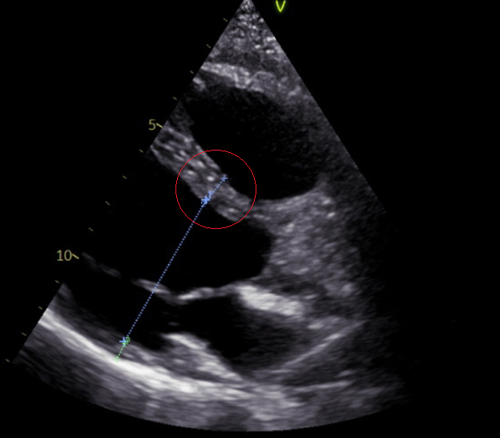
9.1.1.2.2 LV:n mittaus (diastole)
Jos mittasit edellä IVS:n, UKG-laite siirtyy suoraan vasemman kammion diastolisen mitan (LVIDd, left ventricular internal dimension in diastole) kohdalle. Joskus septumin mittausta ei voi oikein luotettavasti suorittaa sen demarkoituessa huonosti, jolloin voi valita Calc-nappulan takaa suoraan Main Menu –> Dimensions –> LVIDd (MM), ja jättää IVSd:n (ja RVIDd:n) tässä yhteydessä mittaamatta.
Mittaa LVIDd alla olevan esimerkkikuvan mukaisesti kudoksesta kudokseen eli inner edge to inner edge (ei siis verestä vereen). Mittaus tulisi tyypillisesti aloittaa suoraan IVS:n kammionpuoleisesta mittauspisteestä.
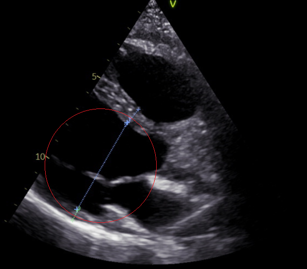
9.1.1.2.3 LVPW:n mittaus
Jos mittasit edellä LVIDd:n, UKG-laite siirtyy suoraan vasemman kammion takaseinän (LVPWd) kohdalle. Mittaa LVPWd alla olevan esimerkkikuvan mukaisesti lihaksen kammiopuolisesta osasta perikardiumiin. Mittaus tulisi tyypillisesti aloittaa suoraan LVIDd:n mittauksen loppupisteestä.
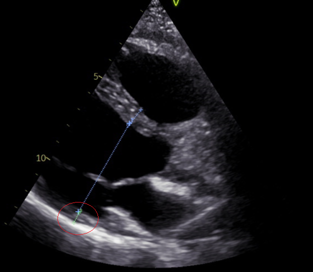
9.1.1.2.4 LV:n mittaus (systole)
B-kuvasta piirtäen tulee tässä kohtaa useilla koneilla poistua calc-ikkunasta, jotta pääsee taas pyörittämään sydänsykliä eteen-/taaksepäin (jos olisi M-moodissa, niin LVPWd:n mittauksen jälkeen kone ehdottaisi suoraan LVIDs:ää (left ventricular internal dimension in systole) ja voisi mitata sen heti samalta näytöltä). Seuraavaksi siis tulee mitata vasemman kammion läpimitta loppusystolessa eli etsitään kuva, jossa vasen kammio on pienimmillään. Mittaus tulisi suorittaa samasta sydänsyklistä kuin mistä diastolinen läpimitta oltiin otettu.
Kun on löytänyt sen hetken, kun vasen kammio on pienimmillään, niin voi mitata sen läpimitan esimerkkikuvan mukaisesti (taas calcin kautta tietysti). Systolessa ei enää yleensä mitata seinämien paksuuksia; joskus nekin voidaan kyllä mitata kvantitatiivisen paikallisen ja globaalinen kontraktiliteetin lisäarviona, mutta useimmiten tätä ei tarvita.
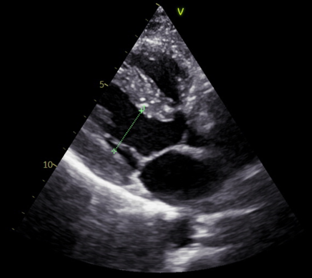
Jos oli aikaisemmin mitannut LVIDd:n niin LVIDs:n saatuaan kone laskee ja ilmaisee “jakoviivan” alla keskeisiä laskennallisia suureita, joista yleensä ilmoitetaan lausunnossa vain fraktionaalisen lyhentymän kautta (fractional shortening eli FS% = (LVIDd-LVIDs)/LVIDd x 100) Teichholzin metodilla laskettu ejektiofraktio (EF). Seinämäpaksuudet ilmoitetaan lausunnossa myös, jos ne on saatu mitattua. Alla olevasta kuvasta voisi siis kirjoittaa lausuntoon: “LV 40/23, josta EF 75 %. Seinämät 11/14.”
- Normaali ejektiofraktio on välillä 50-70%.
- HFmrEF (heart failure with mildly reduced ejection fraction) on välillä 41-49%
- HFrEF (heart failure with reduced ejection fraction) on 40% tai alle
- LV on “hyperdynaaminen” jos EF on yli 70%
- Tämä ei sinänsä ole yleensä levossa hyvä asia ja viittaa taustalla olevaan patologiaan (esim. läppävuodot, high-output-tilat (anemia, hypertyreoosi), hypovolemia…)
- Mielenkiintoisesti “optimaalinen” EF kuolleisuuden kannalta on tutkimusten mukaan 60-65% ja tämän ulkopuolella kuolleisuus on EF:n suhteen U-käyrämäinen
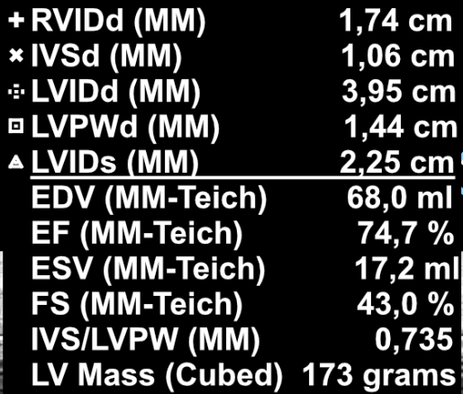
9.1.1.2.5 Sama M-moodilla
Jos saa poikkeuksellisen hyvän leikkaussuunnan M-moodia varten, niin mittaukset kyllä voi ihan hyvillä mielin tehdä M-moodistakin. Mittaukset tehdään samalla periaatteella kuten yllä. Huomioi esimerkkikuvasta, että systolisia seinämäpaksuuksia ei yleensä tarvitse mitata.
M-moodi kuva siis saatiin asettamalla leikkauslinja heti mitraaliläpän avautuvien purjeiden kärkien distaalipuolelle kohtisuorasti kammion pitkään akseliin nähden. Sitten voi painaa koneesta M-mode ja jos tuotettu M-moodikäyrä näyttää hyvältä, niin voi painaa Freeze ja tehdä mittaukset Calc:n kautta avautuvasta valikoista (Main Menu -> Dimensions -> IVSd (ja sen jälkeen kone tarjoaakin automaattisesti LVIDd, LVPWd ja LVIDs järjestyksessä)).
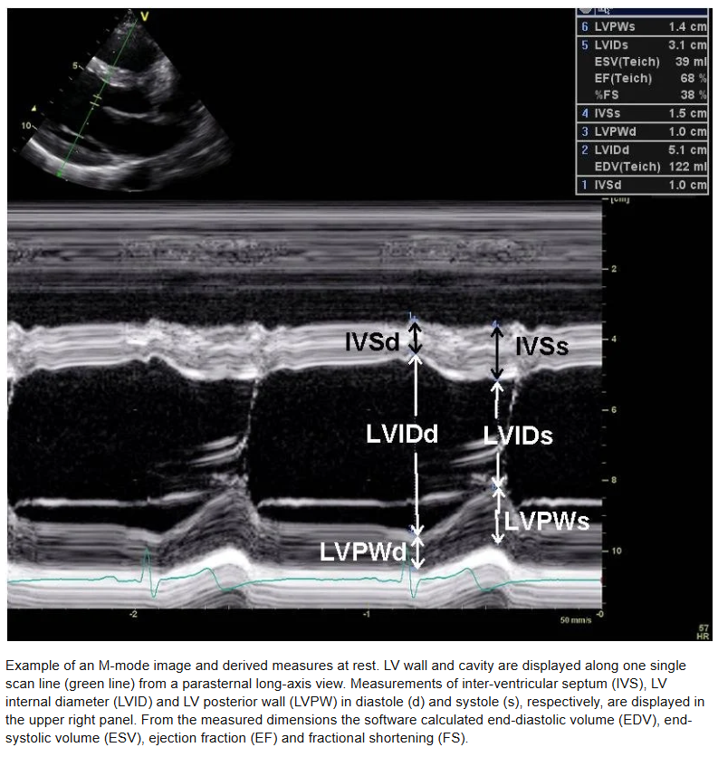
M-moodi (motion mode) siis tarkoitti ultraääänitekniikkaa, jossa arvioidaan vain yhden ohuen sydämen linjan liikettä ajan funktiona - käyrässä siis aika on x-akselilla. Käyrän y-akseli muodostuu leikkauslinjan rakenteista ja niiden liikkeestä. On hyvä tunnistaa B-kuvasta rakenteet ja arvioida ne visuaalisesti ensin tarkasti ja vasta sen jälkeen painaa M-mode päälle, jotta osaa tunnistaa M-käyrältä rakenteet ja miten ne suhteutuvat B-kuvaan.
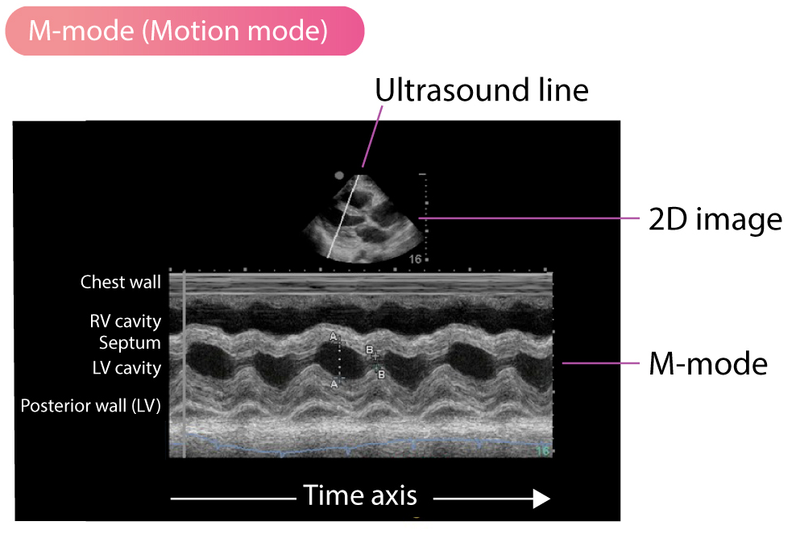
9.1.2 Apikaalisesti
Vasemman kammion mittoja kannattaa aina mahdollisuuksien mukaan kerätä PLAX:n lisäksi myös apikaalisista projektioista. Tyypillisimmin mitattavat arvot ovat kammion loppudiastolinen tilavuus (LVEDD) ja loppusystolinen tilavuus (LVESD). Näistäkin kone pystyy tietysti laskemaan ejektiofraktion.
Mittauksissa hyödynnetään Simpsonin metodia, jossa tilavuus integroidaan kuvittelemalla kammio kooltaan eroaviksi kiekoiksi. Kammion pinta-ala siis planimetroidaan tyypillisesti apikaalisesta nelilokerokuvasta ja tällä tavalla saadaan kiekkopatsaan korkeus ja leveys eri tasoilla. Mittauksessa on geometrinen oletus, että kammion poikkileikkaus on ympyränmuotoinen jokaisella tasolla. Kammio ei kuitenkaan tällainen ole, joten paremman arvion saa, kun hakee vielä apikaalisen kaksilokerokuvan ja tekee mittaukset siitäkin. Tällä tavalla saa kaksi läpimittaa kohtisuorista kuvakulmista ja siten luotettavamman keskiarvon - tätä kutsutaan Simpson’s Biplane -metodiksi.
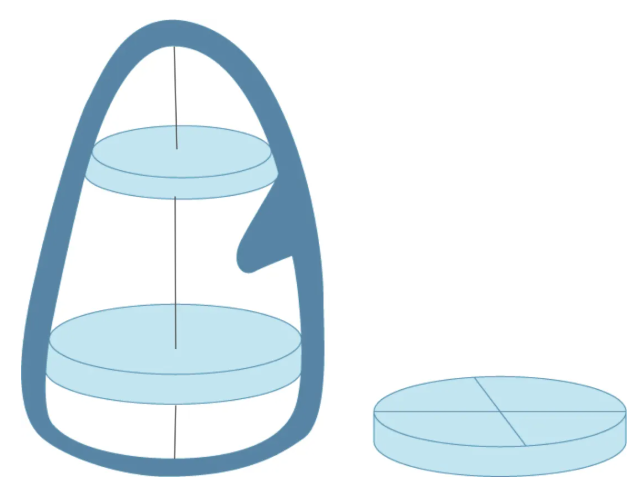
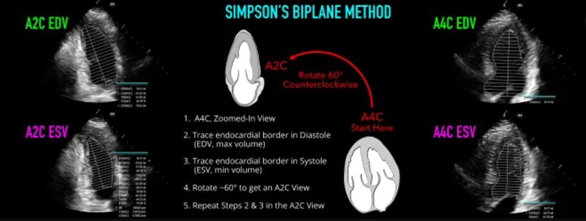
9.1.2.1 Taas muistutus lyhentymisestä
Vaikka Simpson’s Biplane -metodi on tällä hetkellä tarkin 2D-ekokardiografinen LVEF:n mittaustapa, niin se on myös todella käyttäjäriippuvainen. Yksi yleisimmistä virhelähteistä on taas foreshortening eli lyhentymä, jossa sydäntä ei leikata ultraääniaalloilla sen oikeasta apeksista, jolloin ei saada mitattua kammion oikeita mittoja. Tämän takia kammion tilavuudet ovat ultraäänellä mitattuina yleensä pienempiä kuin sydämen MRI:ssä saadut arvot. Lyhentymän takia myös mm. apikaaliset trombit voivat jäädä havaitsematta.
Lyhentymän voi tunnistaa monista piirteistä:


Tässä videossa näkyy papillaarilihas apikaalisimmassa kolmanneksessa ja myös kärjen supistumista kammion sisälle. False apex on myös optimaaliseen kuvaan verrattuna paksumpi ja pyöreämpi.
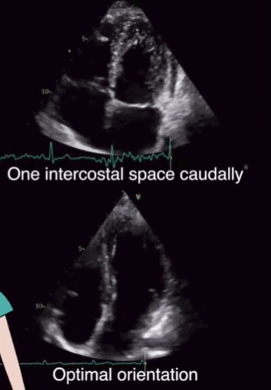
9.1.2.2 LVEDD
Mittaukset kannattaa aloittaa apikaalisesta nelilokerokuvasta ja vasta sen jälkeen arviota tarkentaessaan siirtyä kaksilokerokuvaan (sitä ei aina tarvita, mutta on hyvä jos ehtii ottamaan). Tarkoitus on siis ensiksi löytää oikeaoppinen projektio, jonka jälkeen jäädyttää kuva ja kelata syklejä takaisin niin, että löytää sen hetken, jolloin kammio on isoimmillaan (end-diastolic volume, LVEDD). Sitten voi calc:n kautta hakea LVEDD:n ja piirtää kammion sisäpinta-alan eli tulee seurata endokardiumin rajoja. Endokardiumin rajojen tarkka näkeminen on usein todella vaikeaa ja joskus mahdotonta eikä sydämen sisäpinta ole millään mittarilla sileä - se on täynnä häiritseviä rakenteita, kuten papillaarilihaksia, chordia ja trabekulaatioita.
Endokardiumin piirtämiseen muutamia vinkkejä:
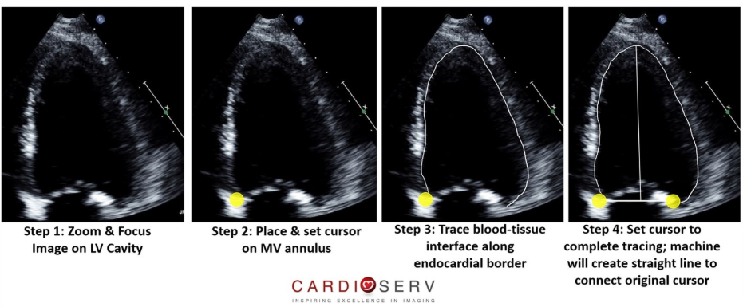
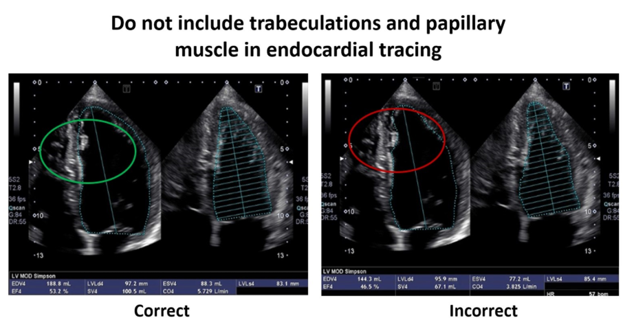
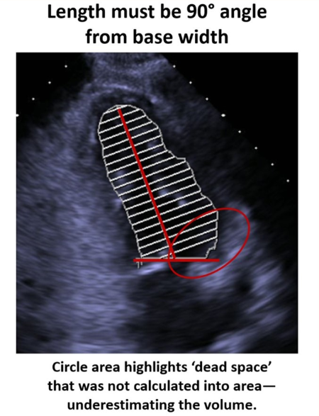
9.1.2.3 LVESD
Seuraavaksi poistetaan diastolinen mittaus näytöltä ja kelataan loppusystoleen eli siihen kohtaan sykliä, jossa vasen kammio on pienimmillään. Sitten piirretään taas sisäpinta. Tämän jälkeen kone laskee ejektiofraktion.
Sitten vielä tehdään samat apikaalisesta kaksilokerokuvasta (A2C).
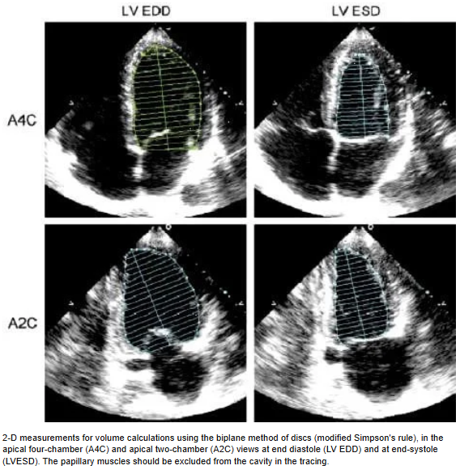
9.1.3 PSAX
Myös parasternaalisesta poikittaiskuvasta voi mitata vasemman kammion mittoja ja ejektiofraktion. Projektiosta voi myös mitata vasemman kammion massan (LV Mass) hieman eri tavalla kuin miten se lasketaan PLAX-kuvasta (kone siis laskee LV:n massan, jos on mitattu IVSd, LVIDd ja LVPWd). LV:n massaa ilmoitetaan aika harvoin lausunnoissa, mutta se periaatteessa on yksi vasemman kammion hypertrofian mittareista; yleensä kuitenkin vain seinämäpaksuudet riittää lausunnossa.
9.1.3.1 PSAX-ejektiofraktio
Ejektiofraktiota arvioitaessa PSAX-projektiosta, tulisi kuvata papillaarilihasten tasoa.
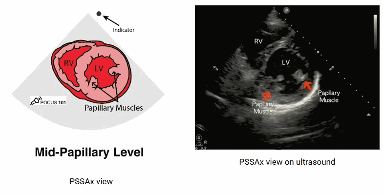
Seuraavaksi seinämät ja läpimitta (läpimitta diastolessa ja systolessa) mitataan joko B-kuvasta tai M-moodista esimerkkikuvan mukaisesti:
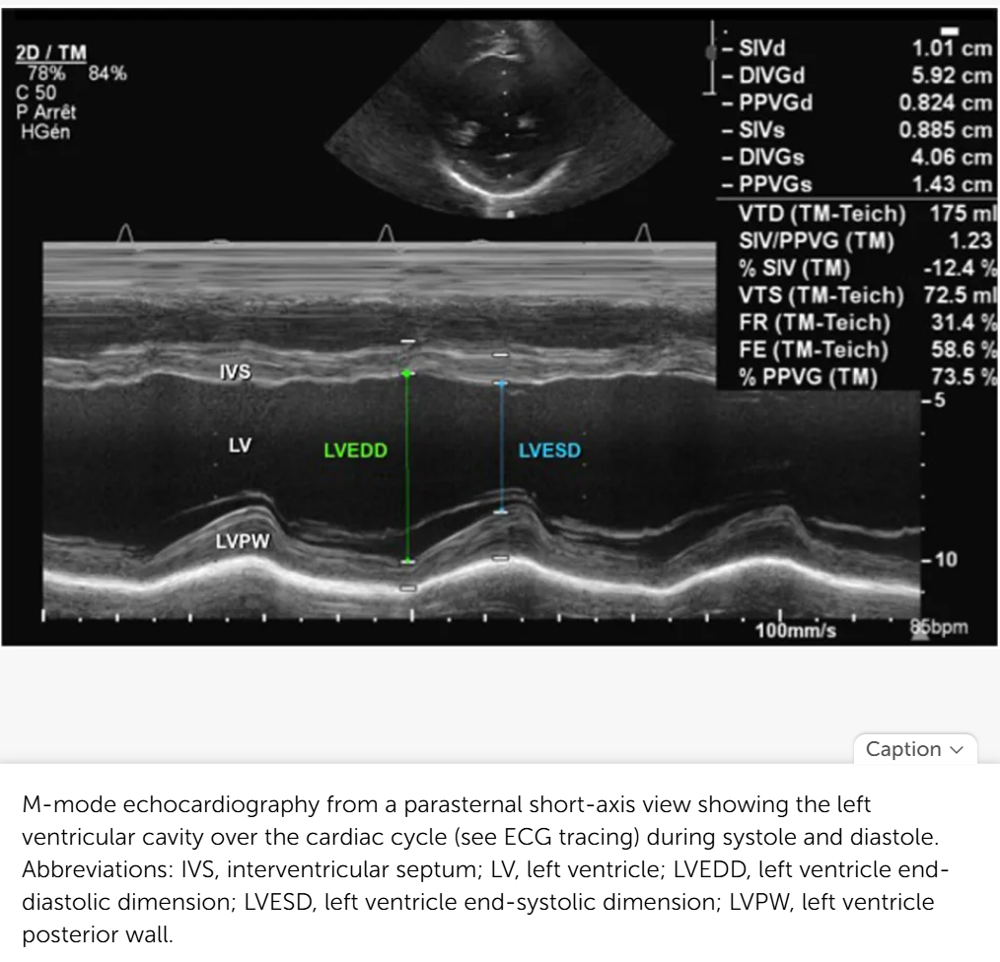
Voi myös laskea ejektiofraktion ns. fraktionaalisen pinta-alan muutoksen kautta planimetroiden papillaarilihastason sisäpinta-alan:
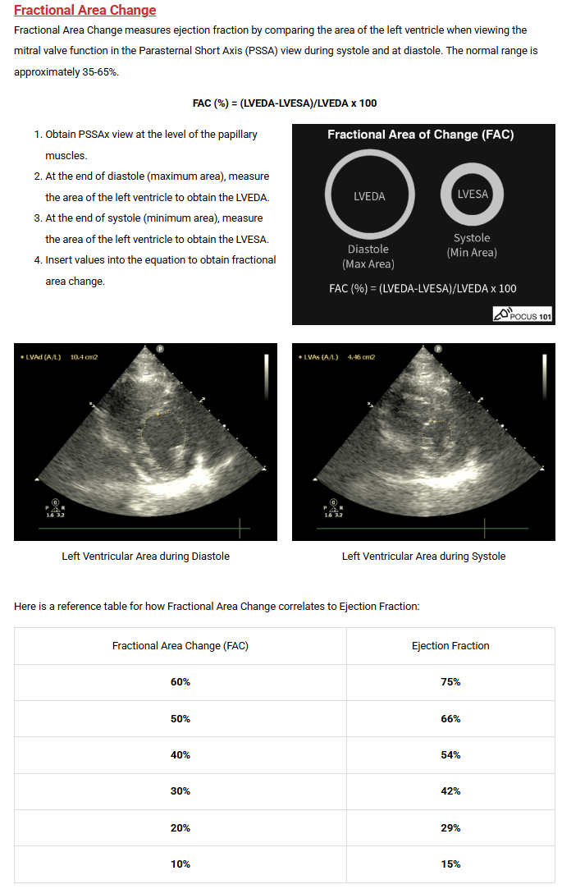
9.2 Silmämääräinen arvio
Tutkimuksien (esim. Gudmundsson et al., 2005) mukaan silmämääräinen ejektiofraktion arvio korreloi todella tarkasti kvantitatiivisten mittausten kanssa - se voi jopa olla tarkin ekokardiografinen metodi LV:n systolisen funktion arvioimisessa. Joskus huonossa näkyvyydessä ei edes voi tehdä moniparametrisia EF:n mittauksia, jolloin silmämääräiseen arvioon joutuu tukeutumaan vahvasti. Silmämääräinen arvio on helppoa toteuttaa jo aloittelijana, mutta sen luotettavuus perustuu pitkälti kokemukseen ja tämä kehittyy jokaisella n-luvun lisäyksellä. Ns. eyeballing onkin yksi ensimmäisistä echo-taidoista, jonka voi oppia, mutta se on yksi viimeisistä, jonka tulee hallitsemaan.
9.2.1 Vinkkejä
Aluksi voi keskittyä siihen, että osaa tunnistaa ja erottaa hyperkineettisen (EF >70%), normaalin (EF 50-70%) ja hypokineettisen (EF <50%) vasemman kammion. Sitten voi lähteä varsinkin systolisessa vajaatoiminnassa tarkentamaan arviotaan ja antaa arvion niin tarkasti kuin kehtaa (yleensä voi antaa n. 5% tarkkuudella). Yleensä varsinkin akuuttitilanteissa kuitenkin riittää arviot “hyperdynaaminen”, “normaali”, “lievästi alentunut” ja “merkittävästi alentunut”.
Ejektiofraktion arvioimiseen vaikuttaa paljon se, onko todettavissa paikallisia seinämien liikehäiriöitä (esim. akineettinen apex yms.) tai dyssynkroniaa. Kannattaakin silmäillä seinämät tarkasti läpi monissa projektioissa ja arvioida seinämien toimintaa kauttaaltaan. Samalla voi arvioida kaikissa projektioissa silmämääräisesti ejektiofraktiotakin - sydän on siis kolmiulotteinen rakenne ja silmämääräinenkin arvio vaatii sydämen visualisoinnin monista suunnista niin, että saa käsityksen sydämen kolmiulotteisesta toiminnasta.
Silmämääräisessä arviossa voi hyödyntää mm. seuraavia tarkkailukohtia (näiden tarkkuus laskee merkittävästi paikallisissa liikehäiriöissä ja dyssynkroniassa):
9.2.2 LV:n fraktionaalinen lyhentyminen ja myokardiumin paksuuntuminen
LV:n fraktionaalinen lyhentyminen (FS) on ehkä tärkein visuaalinen parametri ja se siis käytännössä tarkoittaa vasemman kammion konsentrista supistumista. Arvioidaan siis kuinka paljon seinämät liikkuvat kohti keskustaa ja kuinka paljon kammion läpimitta vähenee systolessa verrattuna diastoleen. Samalla tavalla ejektiofraktio arvioidaan muutenkin esim. PLAX-näkymästä, mutta tällä kertaa ei vain tehdä virallisia mittauksia, vaan arvioidaan tilanne silmämääräisesti. Fraktionaalista lyhentymää voi arvioida käytännössä kaikista projektioista, jossa näkee vasemman kammion hyvin (esim. PLAX, PSAX, apikaalinen).
Nyrkkisääntönä voi ajatella, että normaali FS on >25% eli jos LV:n sisäinen läpimitta pienenee diastolesta systoleen yli neljänneksen, niin ejektiofraktio on normaali. EF on lievästi madaltunut FS:n ollessa n. 20-25% ja merkittävästi madaltunut <20%:ssa. Karkeasti voi siis sanoa, että ejektiofraktio on noin tuplat fraktionaalisesta lyhentymisestä.
Fraktionaalisen lyhentymisen lisäksi kannattaa arvioida myokardiumin paksuuntumista systolessa. Lihasseinämät siis normaalisti paksunevat hyvässä systolisessa toiminnassa – voi esim. ajatella hauislihasta, joka paksunee sitä jännittäessä. Lihaksessa on jännittäessäkin sama määrä lihassäikeitä, mutta ne ovat pakkautuneet pienempään tilaan -> näyttää paksummalta. Heikossa systolisessa toiminnassa seinämien paksuuntuminen on vähäisempää.
Normaalisti lihasseinämä paksuuntuu n. >30% systolessa diastoleen verrattuna.
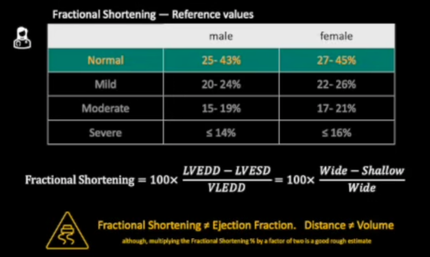
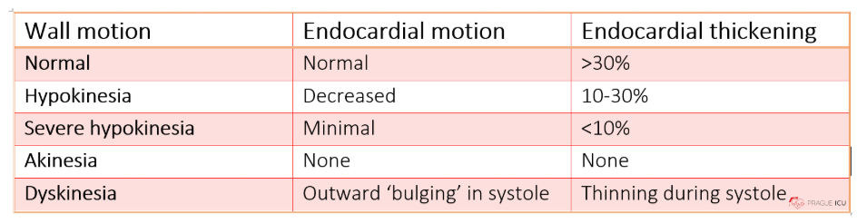
9.2.3 EPSS
E-point septal separation (EPSS) on osoittautunut hyväksi tavaksi nopeasti ja karkeasti arvioida ejektiofraktiota niin silmämääräisesti kuin semikvantitatiivisestikin.
EPSS mitataan PLAX-ikkunasta asettamalla M-moodin leikkauslinja mitraaliläpän anteriorisen purjeen kärjen läpi.
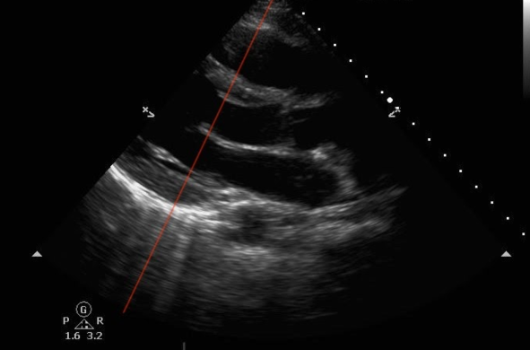
Muodostuvassa M-moodikäyrässä näkyy kaksi huippua. Ensimmäinen (isompi) huippu on E-piste ja vastaa maksimaalista mitraaliläpän avautumista aikaisessa diastolessa. Toinen (pienempi) huippu on A-piste ja se vastaa eteisen supistumiseen myöhäisessä diastolessa (eteissystole). Mitraaliläpän virtauksiin ja diastoliikkaan perehdytään tarkemmin sen omassa kappaleessaan, mutta nopea johdanto aiheeseen: Diastolessa voidaan sinusrytmissä yleensä todeta kaksi erillistä veren virtausaaltoa mitraaliläpän läpi vasemmasta eteisestä vasempaan kammioon. Ensimmäinen aalto (E-wave eli early wave) kuvastaa mitraaliläpän avautumista ja vasemman kammion relaksoitumisen aiheuttamaa virtausta kammioon. Myöhäidiastolessa nähtävä toinen aalto (A-wave eli atrial wave) kuvastaa sitä, kun eteinen puristaa vielä loputkin veret kammioon (atrial kick, eteissystole). Nämä virtaukset myös heijastuvat mitraaliläpän liikkeessä ja voidaankin nähdä mitraaliläpän anteriorisen purjeen kaksifaasinen avautumisliike.
Normaalissa sydämessä hyvän systolisen puristuksen (normaali EF) jälkeen suuri volyymi puristetaan ulos vasemmasta kammiosta ja tämän jälkeen kammion relaksoituessa nopeasti syntyy imuejekti ja avautuvan mitraaliläpän läpi virtaa runsaasti virtaa fyysisesti työntäen anteriorista purjetta auki. Purje voi jopa läpsähtää kammioväliseinämää päin. Heikossa ejektiofraktiossa taas vasempaan kammioon jää paljon verta ja mitraaliläpän avautuminen on heikompaa eikä se liiku yhtä helposti kohti kammioväliseinämää.
Täten E-pisteen ja kammioväliseinämän välinen etäisyys (EPSS) on epäsuora ejektiofraktion mittari.
- Tutkimusten mukaan EPSS >7mm on 100% herkkyydeltään EF <30%:n suhteen, joten EPSS <7mm poissulkee ainakin sen, että EF olisi alle 30%. Tarkkuus ei ole kuitenkaan tätä samaa luokkaa (monia häiritseviä tekijöitä), joten pelkkään EPSS:ään ei kannata perustaa ejektiofraktioarviota.
EPSS:n voi tietysti myös arvioida silmämääräisesti ilman M-moodiakin ja jos näkee, että anteriorinen purje osuu kammioväliseinämään, niin se viittaa normaaliin ejektiofraktioon.
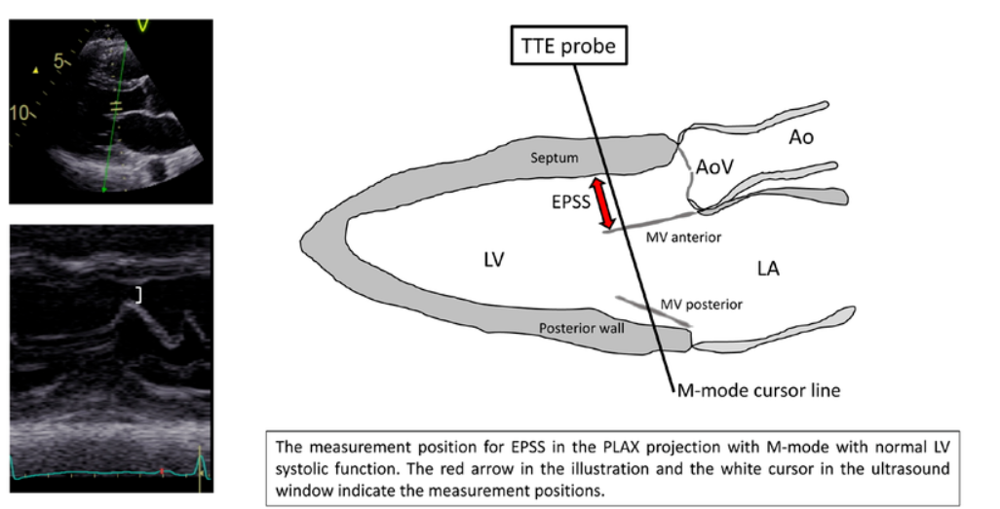
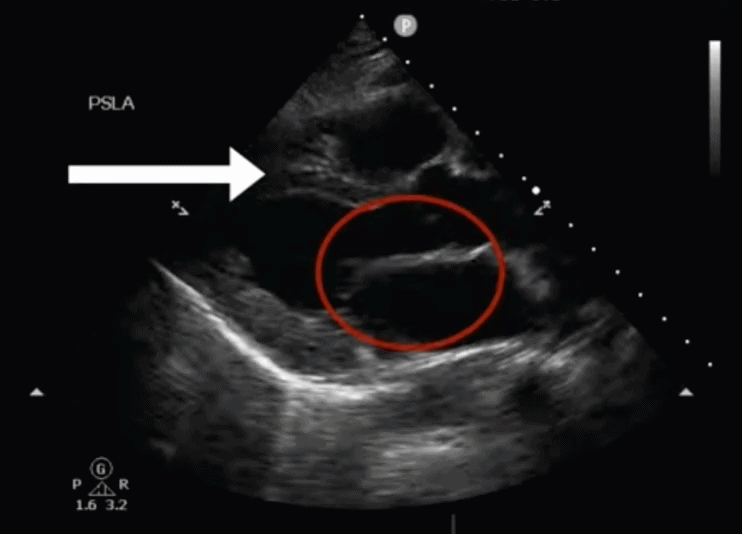
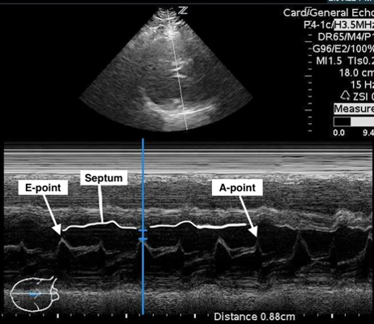
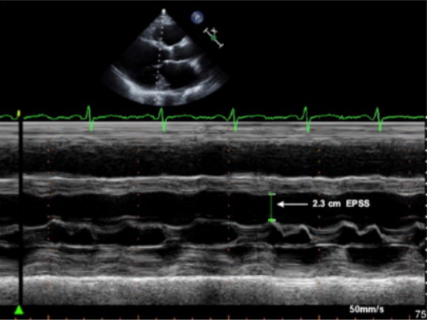
9.2.3.1 EPSS:n sudenkuoppia
EPSS antaa usein aika tarkankin arvion ejektiofraktiosta (virallinen kaava karkealle ejektiofraktion laskemiselle on EF = 75.5 - (2.5 * EPSS); tätä ei kuitenkaan yleensä käytetä, vaan EPSS on enemmänkin tukena muussa päättelyssä), mutta kannattaa pitää mielessä muutamia teknisiä ja patologisia limitaatioita.
Yleisimpiä ongelmia mittausteknisesti on väärä mittauspaikka ja väärä mittauskulma.
Väärä mittauspaikka yleensä viittaa siihen, että M-moodikursori asetetaan liian proksimaalisesti anterioriseen purjeeseen. Tällöin ei mitata oikeaa purjeen kärjen ja septumin välistä eroa ja EPSS yliarvioidaan.
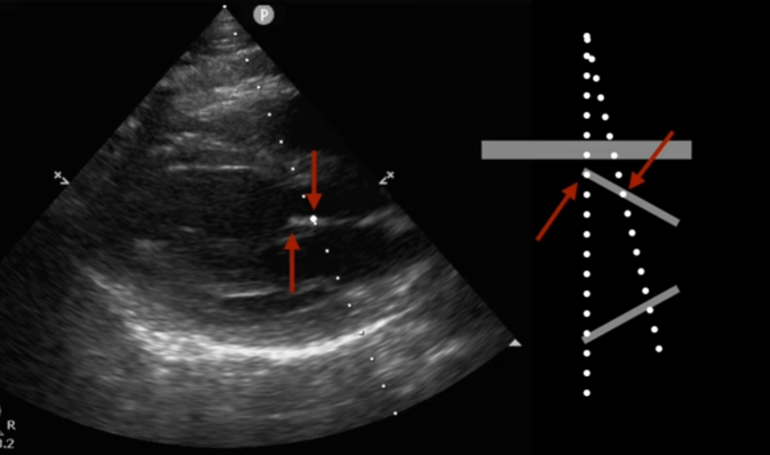
Väärä mittauskulma taas viittaa siihen, että septum kulkee näytöllä vinossa kulmassa ja anteriorinen purje tietysti tämän suuntaisesti. Jos tällaisessa tilanteessa asettaa M-moodikursorin kulkemaan anteriorisen purjeen kärjen läpi, niin mitataan kärjen ja septumin välinen etäisyys myös vinosti, jolloin niiden välinen etäisyys yliarvioidaan verrattuna siihen, että etäisyys mitattaisiin kohtisuorasti.
Mittausvirheet siis voivat vain yliarvioida EPSS:n ja täten aliarvioida ejektiofraktion; toiseen suuntaan ongelmaa ei yleensä ole.
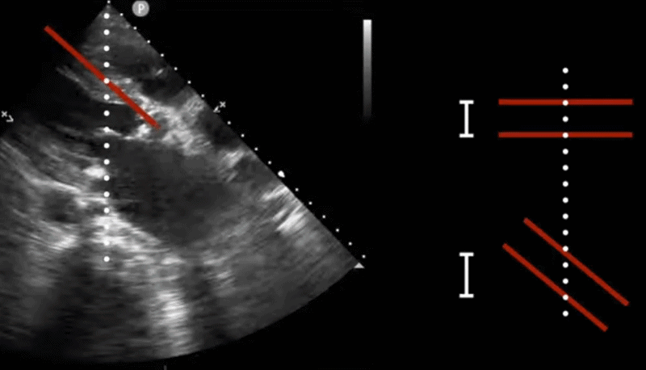
EPSS:ään vaikuttaa myös monet sydämen patologiat, joista tärkeimmät ovat läppäviat (erityisesti aorttavuoto ja mitraalistenoosi) ja eteisvärinä. Eteisvärinässä ei ole synkronoitua eteistoimintaa, jolloin ei nähdä A-aaltoa eikä A-pistettä, mutta vain vaihtelevan kokoisia E-aaltoja, jotka ilmenevät epäsäännöllisen epäsäännöllisesti. EPSS siis vaihtelee ja on antaa usein oikeaa systolista funktiota heikomman arvion (tätä voi kompensoida ottamalla keskiarvoja monista sykleistä).
Aorttavuodossa kammioon takaisinpäin virtaava veri aiheuttaa painetta anteriorista purjetta vasten ja estää sen täydellistä avautumista nostaen EPSS:ää.

Mitraalistenoosissa heikosti avautuva mitraaliläppä johtaa luonnollisesti korkeaan EPSS:ään.

9.2.4 MAPSE
Mitral Annular Plane Systolic Excursion (MAPSE) kuvastaa vasemman kammion pitkittäissupistuvuutta ja on yksi vasemman kammion systoliikan arvioimiskeino. Pitkittäissupistuvuuden mittaamista käytetään kuitenkin enemmän oikean kammion systolisen funktion arvioimisessa. Tällöin mitattaisiin TAPSE eli Tricuspid Annular Plane Systolic Excursion – palataan tähän, kun puhutaan oikeasta kammiosta ja sen mitoista.
Vaikka MAPSE ilmoitetaan aika harvoin lausunnoissa, niin vähintään sen visuaalinen arvio tulisi kuulua ejektiofraktion silmämääräisen arvion kokonaisuuteen. Jos MAPSE halutaan numeerisesti mitata, niin se tapahtuu apikaalisesta projektiosta (ensisijaisesti A4C), jossa M-moodikursori asetetaan mitraaliläpän annulukseen lateraalisesti ja/tai septaalisesti. Yleensä mittaus tehdään lateraalisesti, mutta tarkimman arvion saa, kun mittaa myös septaalisen (mediaalisen) MAPSE:n ja laskee näiden keskiarvon.
M-moodi piirtää käyrän, jossa näkyy annuluksen liike pitkittäissuunnassa. MAPSE mitataan käyrän huipun ja pohjan välisenä korkeuserona. Tämän voi tehdä ihan caliperilla; ei siis tarvitse sinänsä kertoa koneelle mitä mittaa, koska jatkolaskelmia MAPSE:sta ei oikein tehdä. Caliperilla voi siis klikata käyrän huipun ja seurata samaa käyrää sen pohjalle saakka – kone ilmoittaa sitten huipun ja pohjan välisen korkeuseron (ei siis mitata piirtyvää hypotenuusaa, koska se on sykeriippuvainen).
Normaali MAPSE on useimpien lähteiden mukaan ≥ 13 mm miehillä ja ≥ 11 mm naisilla.
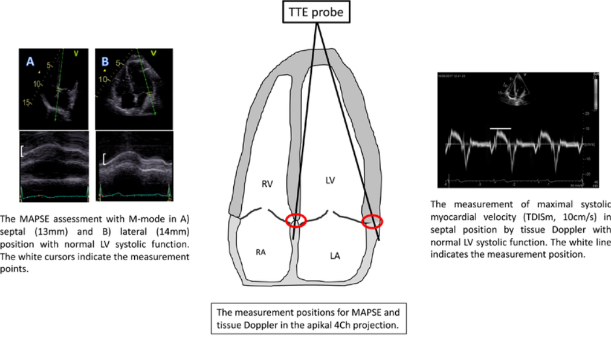
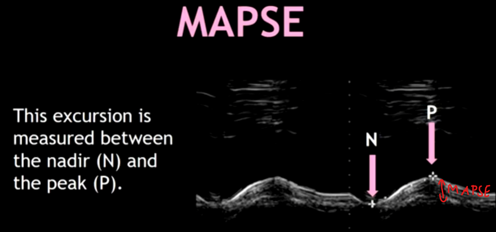
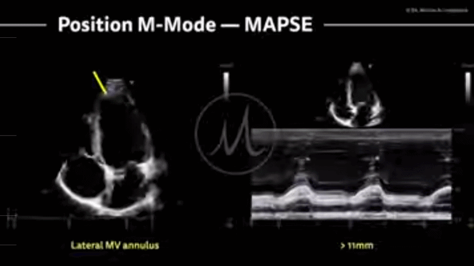
9.2.5 Esimerkkejä
Alla on esimerkkigifejä sydämistä eri ejektiofraktiossa. Suuri osa niistä on tältä videolta, jos haluaa katsoa klippejä selostuksen kanssa. Yleensä ei tarvitse ihan 5%:n tarkkuudella antaa arviota, mutta näin kyllä voi tehdä, jos on varmahko arviostaan.
9.2.5.1 Hyperdynaaminen EF (>70%)
Hyperdynaaminen LV on tyypillisesti pienehkö ja kollapsoitunut. Usein tyypillistä mm. distributiiviselle tai hypovoleemiselle sokille ja erityisesti sepsikselle. Muita aiheuttajia on mm. muut katekoliamiineja lisäävät stressitilat, hypertyreoosi, anemia… Vasemman kammion kollapsi voi myös johtua oikean kammion merkittävästä rasittumisesta ja laajentumisesta, kuten vaikeassa pulmonaalihypertensiossa (kts. alin gif).


9.3 Yleisiä sudenkuoppia
Kuten kaikessa ultraäänitutkimukseen liittyvässä, vasemman kammion ulottuvuuksien mittaamisessa ja ejektiofraktion arvioimisessa on monia ongelmakohtia, jotka voivat johtaa tutkijaa harhaan. Yllä ollaan jo puhuttu paljon forshorteningista ja sen vaikutuksista sekä annettu myös muutamia vinkkejä endokardiumin rajojen tunnistamiseen apikaalisissa projektioissa. Käydään läpi vielä muutamia yleisesti tavattavia ongelmia.
Paikalliset liikehäiriöt ja dyssynkronia ovat käsitelty omassa kappaleessaan.
9.3.1 Kammioväliseinämän paksuus - False tendon / Moderator band / Sigmoidi septum
IVS:n mittaamisessa on muutamia ongelmakohtia, joista yleisimpiä ovat septumin läheiset rakenteet, kuten false tendonit ja moderator bandit. Samoin septumin sigmoidaalinen tyven paksuuntuminen on yleinen häiriötekijä.
9.3.1.1 False tendon
False tendon eli valejänne (left ventricular false tendon, LVFT) on pääsääntöisesti vaaraton ja yleinen (esiintyvyys vaihtelee 18%-83%) sydämen anatominen variantti, joka sijaitsee vasemmassa kammiossa. Se on fibromuskulaarinen säie, joka kulkee kammion seinämästä toiseen vaikuttamatta sydämen toimintaan. Ne voivat joskus aiheuttaa varsinkin lapsilla harmittomia systolisia sivuääniä säikeiden värinästä johtuen ja todella harvoin ne voivat myös olla rytmihäiriöille altistavia (sisältävät sähköisiä signaaleja välittäviä purkinjen säikeitä). Pääsääntöisesti kuitenkin niiden ainoa kliininen merkitys on niistä aiheutuvat kuvantamishaasteet.
Koska suurin osa false tendoneista kiinnittyy septumiin ja vielä septumin tyveen, niin ne luonnollisesti tulevat PLAX:ssa usein mittauslinjalle. Tällöin se pitää osata tunnistaa ja ymmärtää jättää mittaamatta IVS:n paksuutta arvioidessa. False tendonin huomaa yleensä helposti siitä, että sen ja oikean kammioväliseinän välissä näkyy anekooista verta; kuitenkin joskus säie voi nuolla seinämää hyvinkin läheltä, jolloin tämän tunnistaminen on vaikeaa.
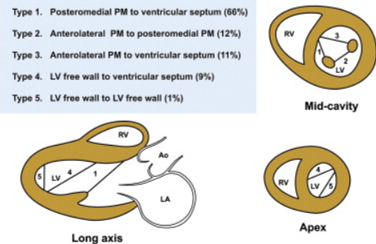
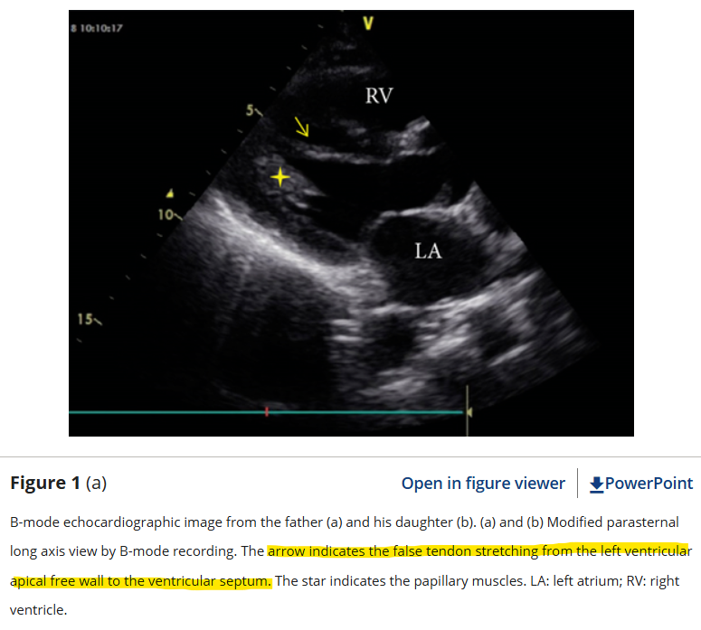
9.3.1.2 Moderator band
Myös oikealla kammiolla on oma yleinen mittauksia häiritsevä anatominen piirre - moderator band. Se on sydämen oikeassa kammiossa sijaitseva lihasjuoste, jota kutsutaan myös nimellä septomarginaalinen trabekkeli (lat. trabecula septomarginalis). Se on normaalistikin esiintyvä sydänrakenne eikä niinkään anatominen variantti (enemmänkin harvinaista, jos ei ole todettavissa - puuttuu vain n. 10%:lla). Se kuitenkin ilmenee eri tavalla ei ihmisillä ja joillain se on prominentimpi kun taas joillain vaikeammin havaittavissa.
Moderator bandin pääasiallinen tehtävä on toimia sähköisiä signaaleja kuljettavana linjana. Se vie osan oikean haaran (right bundle branch) signaaleista oikean kammion anterioriseen papillaarilihakseen. Tämä oikoreitti on merkityksellinen, koska se auttaa varmistamaan, että nystylihas supistuu samanaikaisesti muun kammion kanssa, mikä estää kolmiliuskaläppää (trikuspidaaliläppää) vuotamasta systolen aikana. Se myös tukee kammion seinämää ja estää kammiota venymästä liikaa.
Useimmiten moderator band ei kiinnity niin korkealle kammioväliseinämän tyveen, että se häiritsisi IVS:n mittaamista. Kuitenkin joskus näin käy ja moderator band on hyvä osata tunnistaa niin PLAX:sta kuin muistakin näkymistä.
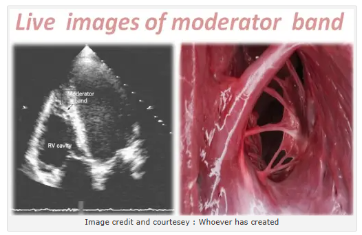
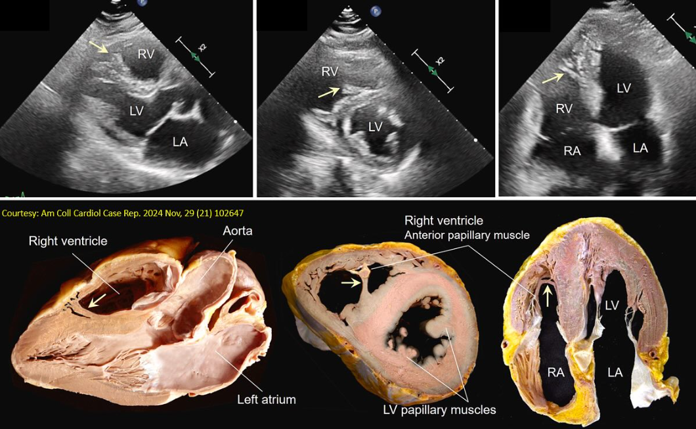
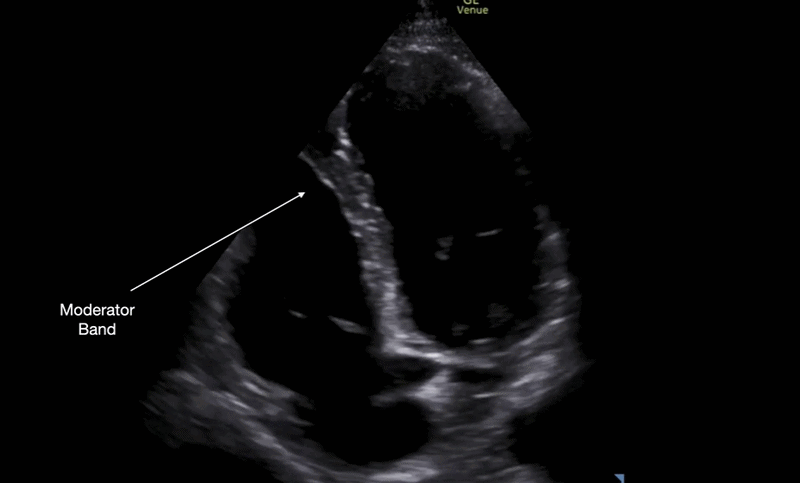
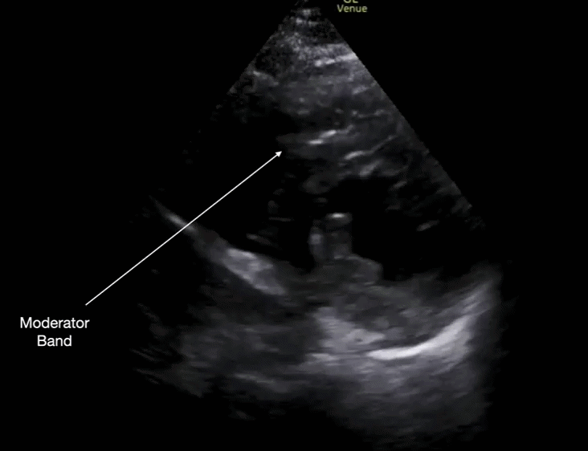
9.3.1.3 Sigmoidi septum
Sigmoid septum (interventricular septal bulge, discrete upper septal thickening, asymmetric septal hypertrophy) on yleinen löydös varsinkin vanhuspopulaatiossa ja viittaa isoloituun septumin tyven paksuuntumaan, joka ilmenee sigmoidaalisena (S-kirjaimen) muotona. Sigmoidi septum on siis hypertrofisen kardiomyopatian tietty alatyyppi, joka liittyy läheisesti ikääntymiseen ja myös systoliseen verenpaineeseen sekä aorttastenoosiin. Ajatellaan, että korkea verenpaine tai aorttastenoosin tuoma resistenssi kuormittaa erityisesti ulosvirtauskanavan läheistä aluetta ja tämä johtaisi septumin tyviosan paksunemiseen herkästi. Ikääntyminen myös itsessään voi aiheuttaa löydöksen, koska ikääntymiseen liittyvä aortan dilataatio ja pidentyminen johtaa sen siirtymiseen oikealle ja tämä taas aiheuttaa LV:n tyven työntymistä vasemmalle ja LVOT:iin.
- “Oikean” hypertrofisen kardiomyopatian tunnistaa echossa siitä, että paksuuntuminen on laajempaa ja affisioi myös muita osia kuin septumin tyveä paikallisesti (pääasiassa septumia ja loppuosaa vasemmasta kammiosta)

9.3.1.3.1 Sigmoidin kasvun huomioiminen mittauksissa
Sigmoidi tyven kasvu häiritsee kammioväliseinämän paksuuden ja ejektiofraktion mittaamista merkittävästi. Yleensä sigmoidin septumin kanssa kannattaakin siirtää mittauslinjaa hieman apeksia kohti fokaalisesta paksuuntumisesta poispäin (niin diastolessa kuin systolessa). Fokaalisen paksuuntumisen mittaaminen omana arvonaan on kannattavaa, jotta lausunnosta voi saada paremman käsityksen tilanteesta. Alla esimerkkikuva mittauksista.
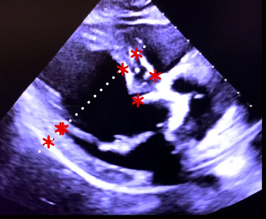
9.3.1.3.2 Sigmoidin kasvun merkitys
Suurimmalle osalle ihmisistä sigmoidi septum on oireeton hyvänlaatuinen anatominen variantti ja vain sivulöydös UKG:ssa. Sillä voi kuitenkin tietyissä tilanteissa olla kliinistä merkitystä. Kasvu voi aiheuttaa dynaamista vasemman kammion ulosvirtauskanavan obstruktiota (LVOTO) varsinkin hyperkontraktiileissa tiloissa tai preloadin ollessa madaltunut (esim. hypovolemia, vasodilataatio, takykardia). Obstruktioon osallistuu vahvasti obstruktiiviseen hypertrofiseen kardiomyopatiaan usein liittyvä mitraaliläpän liike septumiin päin systolessa (SAM-liike; systolic anterior motion).
- Tästä tulee venturi-maskien (käytetään lisähapen annostelumekanismina esim. jos happpiviikset eivät riitä) nimikin. Maskiin pumpataan kapean liittimen kautta 100% happea. Tämä kapean kohdan läpi virtaava happi aiheuttaa venturi-ilmiön kautta imuefektin ja liittimen rei’istä pääsee huoneenilmaa sekoittumaan happivirtaan. Liittimiä ja happivirtauksen nopeutta säätelemällä voidaan muokata lopulta hengitetyn kaasun happipitoisuus sopivaksi potilaalle (yleensä virtaukset välillä 2-15 l/min ja happipitoisuus 28–40 %).
- Usein SAM-potilailla on papillaarilihasten anteriorista siirtymistä ja/tai mitraaliläpän purjeiden ekstensoitumista kammioon. Mitraaliläpän purjeiden koaptaatio tapahtuu siis mitraaliannuluksen distaalipuolella ja usein nämä ekstrapitkät purjeet eivät sulkeudu nätisti, vaan niiden sulkeutumispisteen distaalipuolelle jää ylimääräistä löysää kudosta (“residual leaflet”).
- Ajatellaan, että epänormaali mitraaliläpän ja papillaarilihasten morfologia altistaa systolessa virtaukselle, joka mekaanisesti työntää mitraaliläppää kohti LVOT:ia.
- SAM on siis todennäköisesti yleensä yhdistelmä mekaanista työntöä ja Venturin-ilmiön kautta syntyvää imua
- Dynaaminen LVOTO voi siis usein tulla esiin vain tällaisissa stressitilanteissa ja olla muuten täysin ongelmaton.
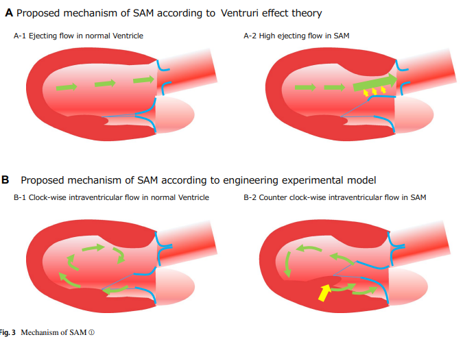
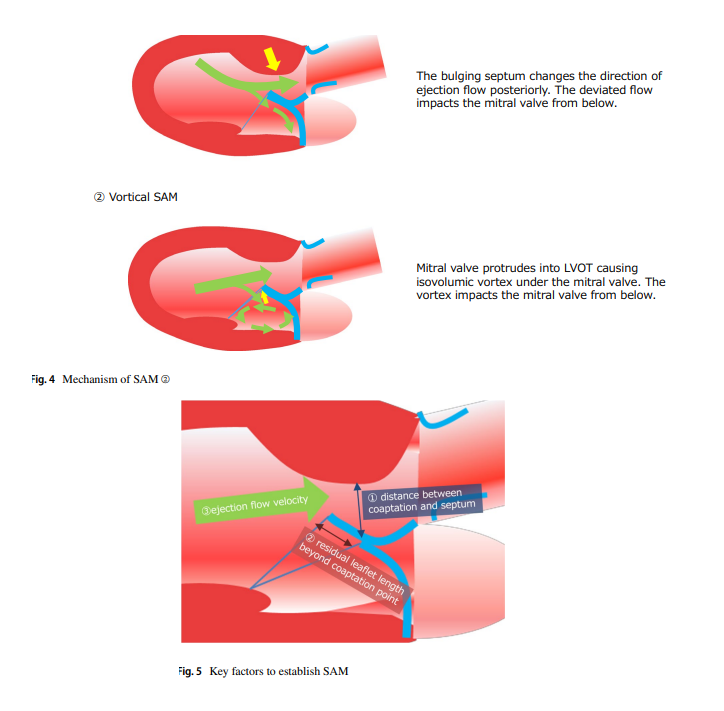
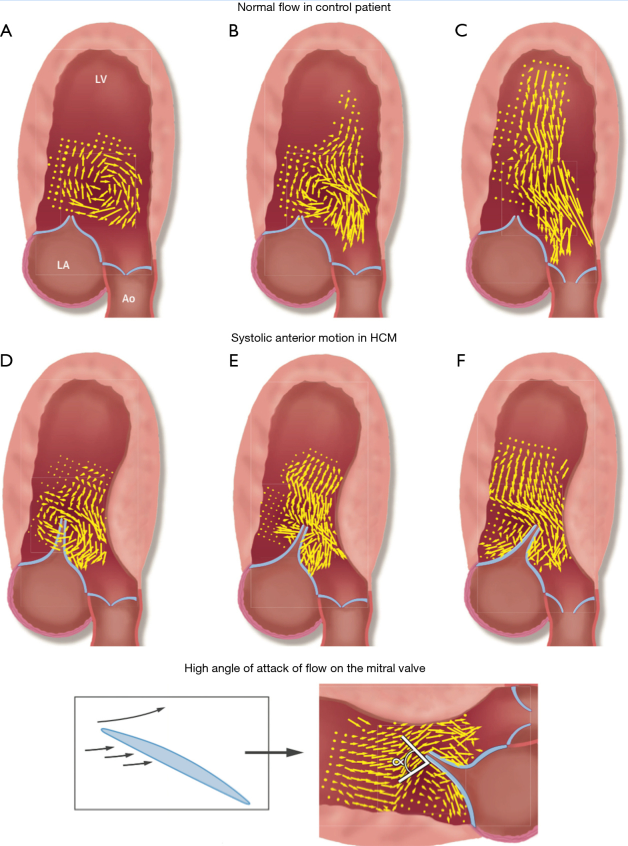
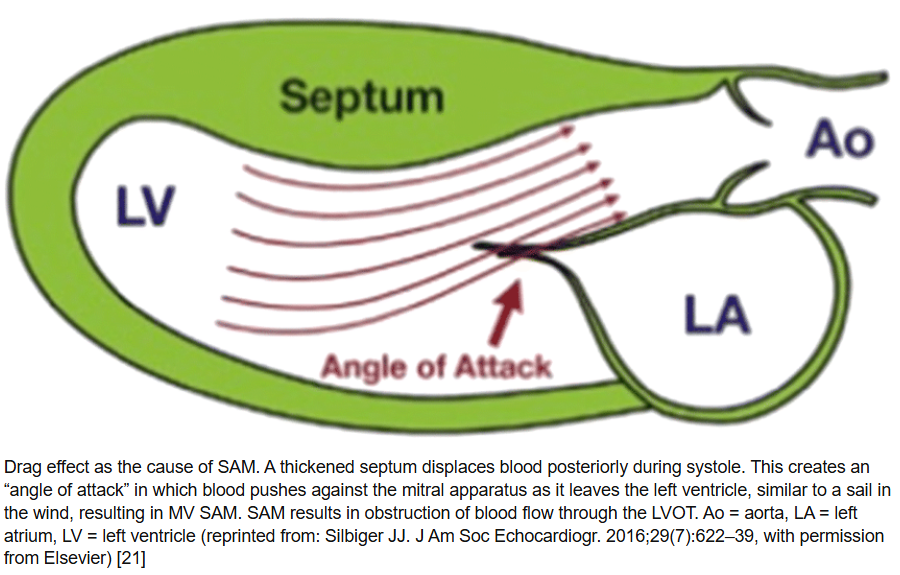
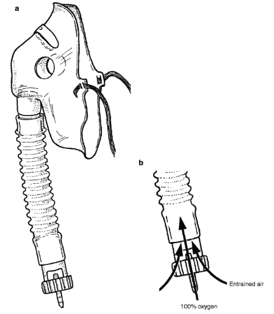
9.3.1.3.3 SAM:n tunnistaminen
SAM:n tunnistaminen alkaa sen riskitekijöiden tunnistamisesta. Jos näkee mm. pienen LV:n, merkittävän paksut seinämät, sigmoidin septumin, papillaarilihasten anteriorista siirtymistä, kapean LVOT:n, nopeat LVOT-virtaukset yms., niin kannattaa myös pitää mielessä SAM:n mahdollisuus ja siirtää silmät myös mitraaliläpän alueelle. Samoin kannattaa erityisesti epäillä SAM:n kehittymistä mitraaliläpän korjausleikkausten jälkeen.
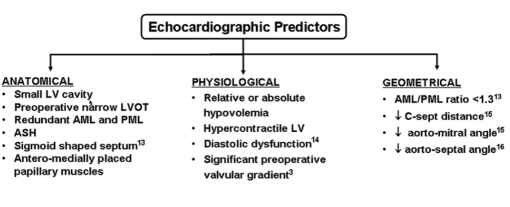
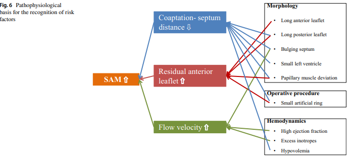
Visuaalisesti SAM:n voi tunnistaa usein pelkällä TTE:llä mm. PLAX- tai A5C (tai A3C)-projektioista.

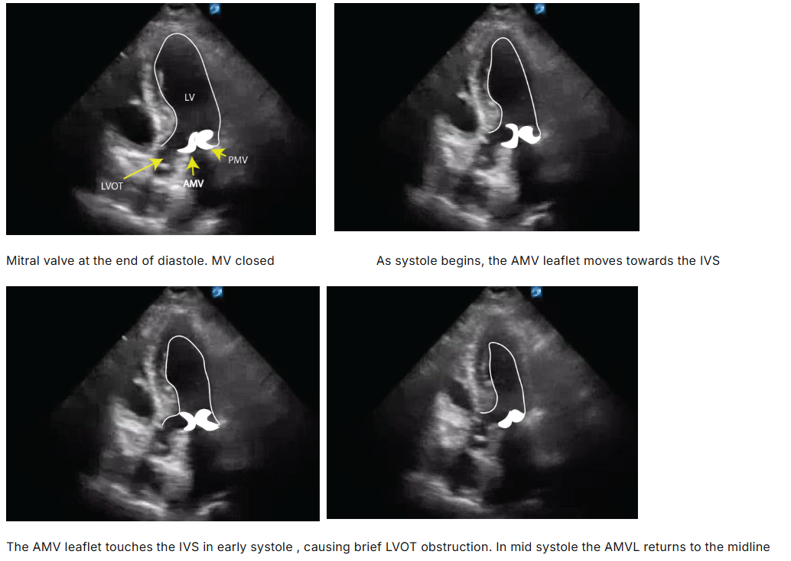

Kuten tästä alimmasta gifistä näkee, niin SAM:n tunnistamista (ja graaderausta) voi helpottaa M-moodi mitraaliläpän kärkien läpi PLAX-projektiossa; samalla tavalla kuin EPSS:n voi ottaa ejektiofraktiota arvioidessaan.
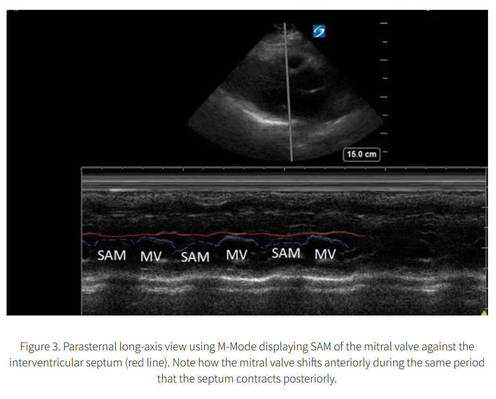
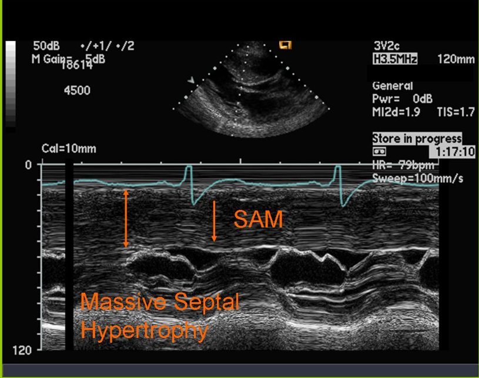